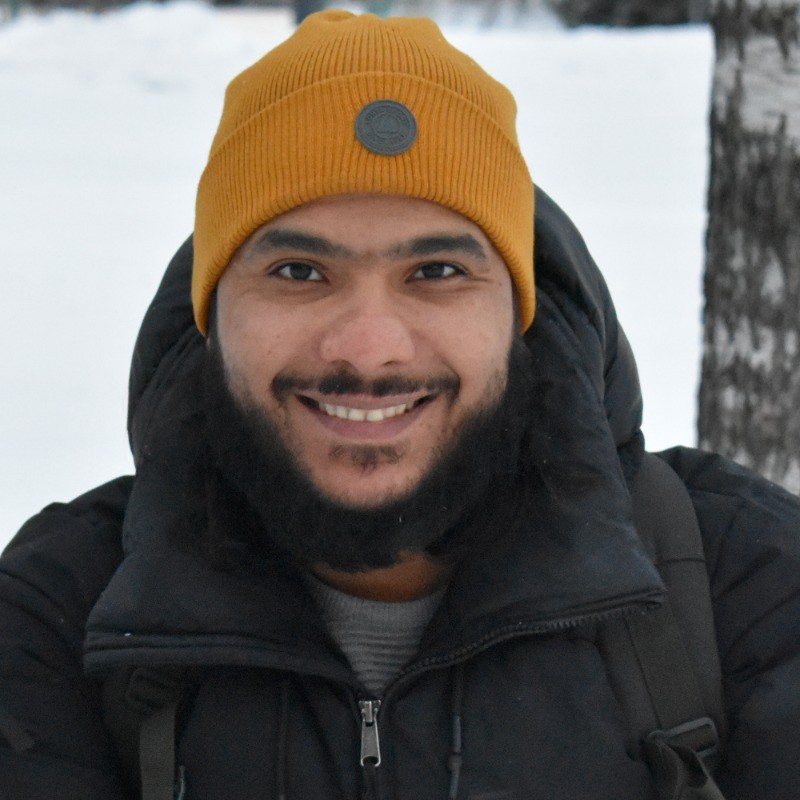

They didn't set out to build another networking app. They set out to fix the one thing that every professional network gets wrong — making connections that actually mean something.

PhD researcher at University of Oulu, senior software engineer, and serial entrepreneur. Built some of the first Arabic NLP products, co-founded two ventures before BrainsMingle, and currently splitting his time between chip design research in Finland and building the platform he always wished existed for professionals like him.
Read Belal's storySoftware engineer with 8+ years of experience and three co-founded startups under his belt. Built Askelp from scratch — planned, designed, coded, and shipped solo. Now building from Toronto as a digital nomad, leading all engineering at BrainsMingle including the real-time video matching engine that powers every connection on the platform.
Read Yousef's storyBoth founders had felt the same frustration from different corners of the world — Belal in Oulu, Yousef in Toronto. Professional networking was broken. Not in a "could be better" way. Broken in a "500 LinkedIn connections you've never actually spoken to" way.
Belal had spent years building products in both hardware and software — from NLP systems for Arabic dialects to chip design research — and kept watching talented professionals in his network fail to connect with the right people because every platform was optimised for accumulation, not conversation.
Yousef had co-founded two startups before BrainsMingle, shipped consumer apps used by hundreds of thousands, and built an entire multilingual Q&A platform from scratch solo. He understood the engineering side of the problem. Real-time, face-to-face matching at scale was hard. But solvable.
When they came together, the question wasn't whether to build it. It was whether they could build it well enough that every single connection would count. The answer is what you see today — a platform live in 85+ countries, with 5,000+ real face-to-face connections made.
"In BrainsMingle, we are building the world's most efficient professional networking platform, where every single connection counts. Forget the 500+ LinkedIn connections you've never spoken to. On BrainsMingle, every connection happens face-to-face over video — real conversations, real opportunities."— Belal Amin, Co-Founder & CEO
"I've co-founded startups and shipped products across my career. The engineering problem BrainsMingle solves — matching the right people in real time at scale, with zero friction — is the most interesting I've worked on. And the most necessary."— Yousef Gamal, Co-Founder & CTO
A product-and-research mind paired with an engineering-and-execution mind. Between them, every layer of BrainsMingle is owned with deep expertise.
Each founder has a full profile — their journey, what they've built, and what drives them.